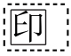

孙用先生：
久不问候了。看见刊物上时有文字发表，藉知依然努力于译作。
近来出版界很销沈，许多书店都争做教科书生意，文艺遂没有什么好东西了，而出版也难，一不小心，便不得了……
《勇敢的约翰》有一个湖风书店印去了。它是小店，没有钱，所以插图十二幅及作者像一幅，是由我印给它的。但我希 先生给与印花壹千个，为将来算账地步，虽然能否算到不可知。
我想印花最好用（裁小）单宣，叠出方格，每张数十或百余，上加名印，如

之大，由他们去帖去。原稿现已校毕，日内当与世界语译本三页，一同挂号寄上。但原稿已被印局弄得一塌胡涂了。我所加的格式，他们也不听。（这里是书局不听作者的话，印刷局也不听书局和作者的话的。）
将来寄印花时，地址可如寄奉原稿时所列。
此上，即颂
著祺。
迅 启上 九月十五夜